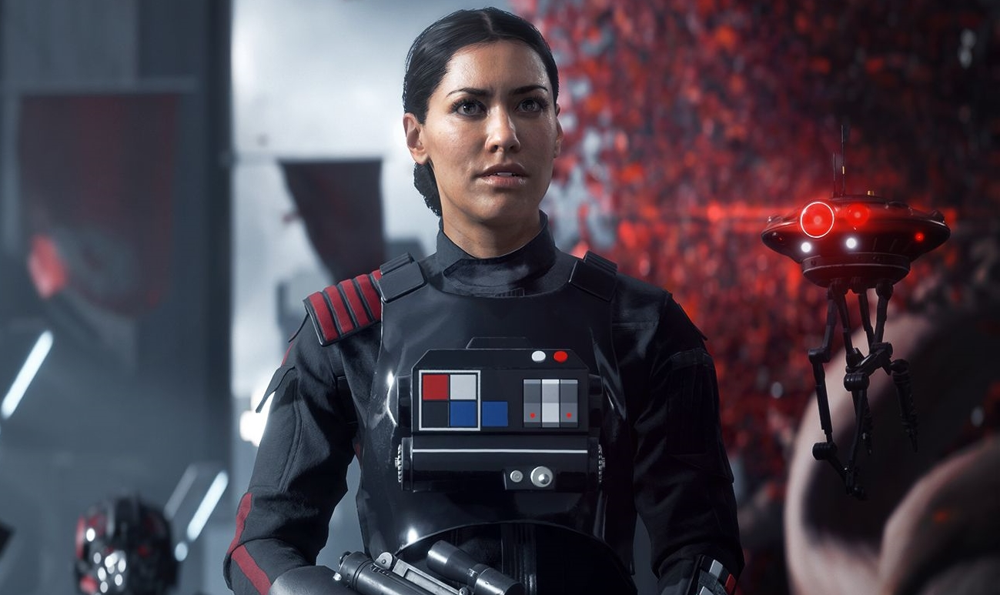

En la Wookiepedia podéis encontrar toda la información relacionada con vuestro universo favorito. Podéis encontrar información sobre los personajes y sus armas, pasando por los vehículos más icónicos de la saga, y mucho más.
Últimas Noticias
Carrie Fisher nos abandona
La República Galáctica no se olvida de su princesa Leia. Así ha quedado nuevamente de manifiesto durante la Star Wars Celebration, que se celebra en Orlando para conmemorar durante cuatro días el 40 aniversario del inicio de la saga de la Guerra de las Galaxias. El equipo de Lucasfilm y Disney rindió un sentido atributo a Carrie Fisher proyectando un emotivo vídeo de la actriz que fue recibido entre aplausos y lágrimas de los asistentes, entre los que se encontraban muchos compañeros de reparto. Con la banda sonora de John Williams como telón de fondo, el vídeo arranca con una dulce sonrisa de Fisher vestida de princesa Leia que sencillamente saluda ante la cámara. Le siguen una sucesión de imágenes de los rodajes, del metraje final y de fragmentos de entrevistas que recuerdan la personalidad alegre, fuerte, vivaz y sensible de la actriz.
Star Wars Battlefront II muestra un nuevo diario de desarrollo
Hace aproximadamente unas dos semanas, desde Electronic Arts nos mostraban un pequeño vídeo en el que era posible ver el proceso de captura de movimiento de, aparantemente, dos soldados tomando cobertura en plena batalla de Star Wars Battlefront II. Siguiendo en esta línea, desde el canal oficial de PlayStation en YouTube se ha publicado un nuevo diario desarrollo centrado en el modo historia que presentará esta nueva entrega, el cual ocurre durante el período de tiempo que transcurre entre Star Wars Episodio VI: El Retorno del Jedi, y Star Wars Episodio VII: El Despertar de la Fuerza.
La idea principal de este nuevo modo historia es enfocarlo hacia un punto de vista de El Imperio Galáctico, puesto que era una perspectiva que no había sido demasiado explotada. Para ello, contaremos con una nueva protagonista, Iden Versio, la cual ostenta un alto puesto de mando en las fuerzas del Imperio Galáctico, y cuya lealtad al mismo es innegable. Dicha lealtad encuentra su base en la propia familia de la protagonista, puesto que su padre había servido también como un alto mando del Imperio.

El objetivo principal del modo historia no es mostrar a un ejército de soldados que parezcan estar todos hipnotizados y sigan sin rechistar las órdenes de sus superiores, sino que se pretende mostrar las motivaciones que llevan a los miembros del Imperio Galáctico a tomar las decisiones que toman, haciendo especial énfasis, lógicamente, en la protagonista. Los desarrolladores aseguran que hay mucho trabajo tras la historia principal, y los jugadores encontrarán más de un momento realmente épico. Si tenemos en cuenta los rumores de hace unos días que indicaban la posibilidad de que la Realidad Virtual llegara a Star Wars Battlefront II, sin lugar a dudas estaríamos hablando de un modo historia con el potencial de dejar algunas de las mejores sensaciones que esta tecnología ha logrado hasta la fecha.